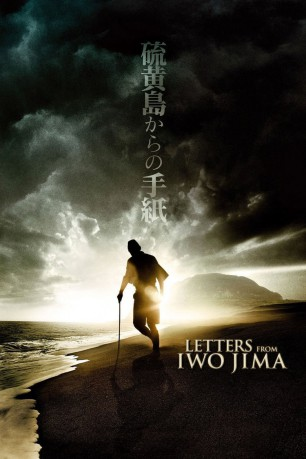

#546 Letters from Iwo Jima
Auszeichnungen: 1 Oscars gewonnen für 3 Oscars nominiert 1 GoldenGlobes gewonnen
 
 IMDB-Wertung: 7.9 / 10
IMDB-Wertung: 7.9 / 10  Metascore: 89
Metascore: 89 
Die Pazifikinsel Iwo Jima im Februar 1945: Unter dem Kommando von General Tadamichi Kuribayashi bereiten sich die japanischen Truppen auf dem Militärstützpunkt auf die bevorstehende Invasion US-amerikanischer Truppenverbände vor. Kuribayashi, der vor dem Krieg die USA bereist hat, weiß genau, dass seine Truppen zahlenmäßig hoffnungslos unterlegen sind, rüstet aber mit strategischem Geschick und der Hilfe seines adligen Freundes Baron Nishi zur Verteidigung der Insel. Da die meisten Soldaten sich über die aussichtslose Lage bewusst sind und wissen, dass sie Iwo Jima höchstwahrscheinlich nicht lebend verlassen werden, schreiben sie ihren Angehörigen in der Heimat Abschiedsbriefe. Als die Amerikaner, die an einen schnellen Sieg über die Japaner glauben, auf der Insel landen, treffen sie auf heftigen Widerstand und einen gut organisierten Gegner, der ihnen fast 40 Tage lang mit dem Mut der Verzweiflung und großer Opferbereitschaft empfindliche Verluste zufügt.
Jahr: 2006
Dauer: 141 Minuten
FSK: 16
Land: USA Studio: Paramount PicturesTonspuren:
Untertitel: Deutsch, Englisch,
Auflösung: 1080p (1920x1080) Größe: 14131 MB
Genre: Drama, Geschichte, Krieg
Regisseur:  Clint Eastwood
Clint Eastwood
Drehbuch: Iris Yamashita, Iris Yamashita, Paul Haggis, Tadamichi Kuribayashi, Tsuyoko Yoshido
Soundtrack: Kyle Eastwood, Michael Stevens
Darsteller:
 Ken Watanabe als General Kuribayashi
Ken Watanabe als General Kuribayashi- Kazunari Ninomiya als Saigo
- Tsuyoshi Ihara als Baron Nishi
 Ryô Kase als Shimizu
Ryô Kase als Shimizu- Shidô Nakamura als Lieutenant Ito
- Hiroshi Watanabe als Lieutenant Fujita
 Yuki Matsuzaki als Nozaki
Yuki Matsuzaki als Nozaki- Takashi Yamaguchi als Kashiwara
- Eijiro Ozaki als Lieutenant Okubo
- Nae als Hanako
 Lucas Elliot Eberl als Sam
Lucas Elliot Eberl als Sam- Sonny Saito als Medic Endo
- Toshiya Agata als Captain Iwasaki
- Ken Kensei als Maj. General Hayashi
- Ikuma Ando als Ozawa
- Akiko Shima als Lead Woman
- Masashi Nagadoi als Admiral Ichimaru
 Mark Moses als American Officer
Mark Moses als American Officer Roxanne Hart als Officer's Wife
Roxanne Hart als Officer's Wife- Mitsu als Suicide Soldier
- Avery Wada als Hashimoto
- Evan Ellingson als Kid Marine
- Masayuki Yonezawa als Ito's Soldier
- Mathew Botuchis als American Marine
- Ryan Kelley als Marine #2
- Michael Lawson als Marine #4
- Taishi Mizuno als Cave Soldier #1
- Daisuke Tsuji als Cave Soldier #2
- Yutaka Takeuchi als Excavator #2
- Ryan Carnes als Marine at Clearing
- Jeremy Glazer als Marine Lieutenant
- Masashi Odate als Cook
- London Kim als Okubo's Soldier
- Dick 'Skip' Evans als Pilot
- Takumi Bando als Captain Tanida
- Nobumasa Sakagami als Admiral Ohsugi
- Steve Santa Sekiyoshi als Kanda
- Hiro Abe als Lt. Colonel Oiso
- Yoshi Ishii als Private Yamazaki
- Toshi Toda als Colonel Adachi
- Yoshio Iizuka als Tired Soldier
- Takuji Kuramoto als Ono
- Yoshi Tomo Kaneda als Japanese Soldier #1
- Shoji Hattori als Japanese Soldier #2
- Mark Tadashi Takahashi als Japanese Soldier #3
- Mitsuyuki Oishi als Japanese Soldier #4
- Kazuyuki Morosawa als Ito's Guard
- Hiroshi Tom Tanaka als Hopeless Soldier
- Yukari Black als Mother
- Daisuke Nagashima als Prisoner
Datei: X:\2-Dilogie(A-F)\Flags of our Fathers-Letters from Iwo Jima\Letters from Iwo Jima (2006, FSK16, 1920x1080).mkv seit 08.03.2015
Festplatte: HD Collection-2(A-Z)-3(A-M)
 Alle Filme aus Gruppe '2-Dilogie(A-F)\Flags of our Fathers-Letters from Iwo Jima'
Alle Filme aus Gruppe '2-Dilogie(A-F)\Flags of our Fathers-Letters from Iwo Jima'